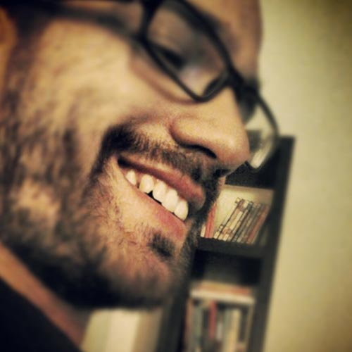
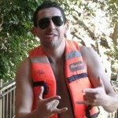
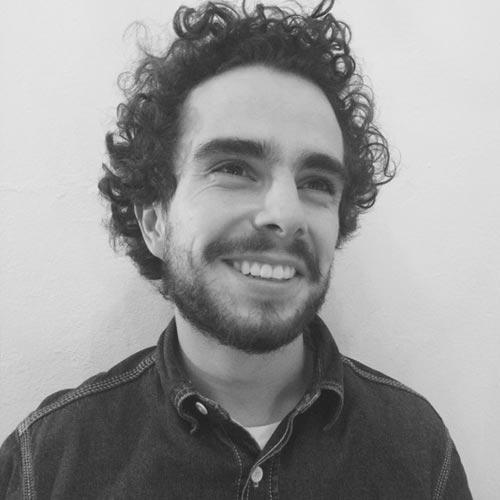

Special thanks
I wanted to use this space of the web to personally thank everyone that is/was involved in the project so far. Precious Plastic wouldn’t be the same without these heroes contributing with their expertise.
Big special thanks to you guys!
- Dave
🎖Core team

Mattia 🇮🇹
This Italian guy started helping out to create version 2, nowadays he is fully nested in the DNA of Precious Plastic. He has been a steady force into making sure the projects runs smooth from day to day, planning out future directions and designing this website.
WebsiteProfileEmile 🇳🇱
He was the first one to join us helping out to develop  version 3. A hands on guy from the Netherlands that gets things done. He makes amazing lunch and is a master in improvising. He helped out to set up a workspace in Kenya and experimenting with plastic (big crystals).
WebsiteProfileMathijs 🇳🇱
Mathijs joined in the early days as part of his masters graduation project at TU/Delft. He is not around full time but saw the entire version evolve from scratch. He has been involved into many different techniques like beam making.
ProfileJohe 🇫🇷
I think Johe has a secret relationship with our workspace- he already left it 3 times but keeps coming back. Using his amazing French craftsmanship skills and techniques to make plastic more valuable. He has been mastering the process of making moulds from Aluminum casting.
WebsiteProfileJerry 🇳🇱
This Dutch guy has unlimited amounts of energy and has been working on the technical side of the project, from machines to mould making. He has been pushing the limits with our iPhone case for the injection machine.
WebsiteProfileSonia 🇵🇱
Girl from Poland silently working in the background gwith a good eye for details. Quietly in the background finding ways to turn bulk amounts of plastic bags into new forms and objects. And providing the workspace with polish liquor.
WebsiteProfileBjorn 🇮🇸
Our tall Icelandic guy started out turning bags into strong sheet material and later running wild experiments and tryouts. Has the ability to easily switch from one technique to another with unique creative output.
WebsiteProfileMarta 🇪🇸
This energetic Spanish girl came straight from working in a refugee camp in Greece to help us out recycling plastic. Serious topics but she is always in for a joke. Or meme. She went full on crafting/sanding and polishing plastic trying to make it more valuable.
WebsiteProfileTaco 🇲🇽
Our Mexican engineer. He joined us before v2 but was only allowed to help out for 3 months because of stupid visa reasons (marriage anyone?). The oldest one in the group, our wise grandfather. He has been all-rounding his engineering skills and hacking the extrusion machine.
Katharina 🇩🇪
Super enthusiast community member from Germany. Came to our studio wanting to help out, now she drops by whenever she has time between studies. She know everything about community. Everything.
WebsiteProfileBen & Bex 🇳🇿
Lovely New Zealanders coding couple working in Netherlands. They have been working on our online map and fully integrating it with our online community + painting the container :)
WebsiteWebsiteProfileProfile💫 Special thanks to these dedicated community members
@Flo-2 Moderating our forums
@xxxolivierxxx Moderating our forums
@Agile Help with the development of shredder
@Semeano Help with the development of the Bazar
@alromh87Â Coding improvements for our online community
@sueyeekhor Community news writer
@Kaegh Allen Helped designing and experimenting with products
@Sharma-sagar Incredible support and help in our forums
@Siemenc Help with extrusion screw + mould making
❤️ Big thanks to the Patreon for the monthly support!
David(o) Van Haute
Josh Foti
Rasal Ibrahim Saeed
Jonathan Penfold
Aurelien Girard
Kristoffer Graff
JP McMullan
rice&carry
scalatoreluigi
Ricardo Frois
Thomas Hermann
Vratislav Pecka
Danny Tortelli
Ana Uribe-Flores
Christ-AndriBette Gardnermooss
Carlos Alcañiz
M-A Djeribi
Paul Denning
Ocean Costelloe
daniel frejno
Maher Almajed
Anuj Dhawan
Ben Naylor
Bibiana HARTMANN
Jeremy Mulholland
Nickolay Marchenko
Santi Farrés
Leo Lamprecht
Graeme Parsons
Lora Green
Louisa Ulrich-Verderber
Michael Lehmann
Bogdan Ivanov
The Creative Peasantry
William Hess
Janine Vangool
Christian Jog
Mark Albing
Casey Sanders
Jake Chennell
Martin Tirtawisata
Carlos Muñoz
Christophe Turon
Lumi Hama
Tom Aubier-Laure
Sorgun Akkor
Sean Merrigan
Michael Hockenhull
Lewis Just
Ethan Ticao
Thomas Neuraz
Aiden Ryan
Fons Schreurs
Dirk Embery
Yonatan Weinberg
Filip Sjögren
Joshua Malavolti
Erin
Antoine Pied
Chris Dub
Tina Steinhauser
Kathelijn Voets
Mario Fetka
Nicolás Miceli
UltiArjan
Jennifer Cocking
Maher Almajed
Wybe Jongenelen
Florian Amon
Tomas Halberstad
Olivier Rouquette
Tanguy Valery
Laurel Scheller
Ronald Bosch
Luca Stephan
Julian Contreras
MAD emergent art center
Paul Lyons
Georgia Wiles
Cloé Marité
Thomas Bichindaritz
Laurin Hahn
Carl Robert Frenkel
Sandra Pijnenburg
Kees de Ligt
Andre Aparcana
Antonino Marohn
Xavier Tumay
Tim van Zwieteren
Mads Hartmann Jensen
Pavla Bo
fahad alawam
Ian Hoy
Elin Porten
Miyú Vela
Mat Hieugalle
Thomas Olsen